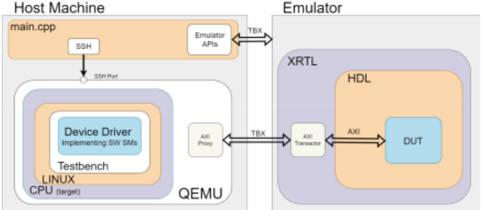
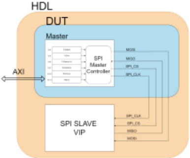
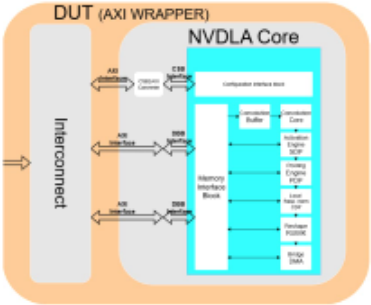
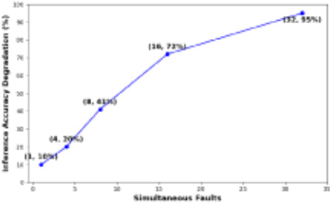
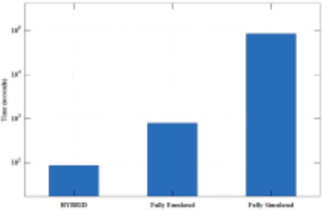

Pre-Silicon Verification of Software Safety Mechanisms
软件安全机制的流片前（Pre-Silicon）验证：结合 SPI 与 NVDLA 案例的混合方法
简介
论文解决软件安全机制（如驱动中的 CRC/Timeout 检查）验证需要整个 SoC 运行、流片前难以开展故障注入的问题，提出硬件仿真与软件虚拟化结合的混合验证方法：外设 IP 的 RTL 运行在 emulator 上，主机用 QEMU 运行虚拟 CPU 及驱动/应用软件栈，经 SCEMI/AXI transactor 事务级接口互连，实现信号级精度的故障注入 campaign。SPI 案例中组合安全机制最高达 96.3% 故障检测率，符合 ISO 26262 对互补安全机制的估计；NVDLA 案例单点故障导致约 10% 推理精度损失，32 个同时故障时达 95%。平台较全仿真环境加速 10×、较 RTL 仿真加速 1000×，仅占用 0.12% 资源（FPGA 需 35.39%）。该方法为团队功能安全验证与基于功能 stimulus 的故障注入/检测率论证提供了平台级参考路径。
问题
软件安全机制（实现于设备驱动中的 CRC 校验、Timeout、寄存器回读 RAW 等）的验证需要 CPU 与外设协同工作，通常要等到整个 SoC 集成完成（接近项目尾声）才能进行，形成流片前安全验证的空白。现有方法各有局限：SWIFI 需要真实硬件且不能准确建模外设故障；基于软件模型（如纯 QEMU）的 SFI 外设模型过于简化、故障传播路径失真，不足以支撑 ISO 26262 合规验证；传统 RTL 仿真速度过慢；FPGA 加速存在容量限制且需硬件改动。论文要解决如何在流片前对外设 IP 高效且精确地开展故障注入 campaign，完成 ISO 26262 安全机制验证。
方法
混合验证架构：外设 IP 的 RTL 在硬件仿真器（StratoM）上运行，具备完整信号可见性与非侵入式故障注入能力（仿真器透明综合额外 LUT 实现注入，无需手工 instrumentation 或 RTL 修改）；主机通过 QEMU 运行虚拟化 Linux 与虚拟 CPU，承载实现软件安全机制的设备驱动与测试应用；两者经 Innexis Developer Pro（AXI transactor）与 SCEMI 标准事务级接口互连。主控程序（main.cpp）通过 C++ API 执行信号级 read/write/force，按可复用四步流程执行故障 campaign：等待 Linux 启动→GoldenRun→循环（复位设计、注入故障、推进时钟、运行 SW TB、移除故障、与 Golden Run 比对）。故障点由安全分析工具（Questa One Safety Analyzer）在 RTL 中识别；NVDLA 案例采用渐进式多点故障注入，同时注入 4/8/16/32 个故障，安全机制为推理结果与 golden 参考比对。
关键结果
SPI 控制器单一安全机制故障检测率：CRC 48.7%、RAW 65.0%、Timeout 44.0%
SPI 组合安全机制检测率：Timeout+CRC 91.4%、Timeout+RAW 96.3%（最高），与 ISO 26262 对互补安全机制的推荐一致
NVDLA 单点故障注入导致约 10% 推理精度损失，其 golden 参考比对安全机制对单点故障的检测率为 10%
NVDLA 渐进式多点故障注入（同时 4/8/16/32 个故障）显示敏感性随故障密度上升，32 个同时故障时精度损失达 95%
性能：混合平台较全仿真（fully emulated）SoC 加速 10×，较传统 RTL 仿真加速 1000×
资源占用：NVDLA 综合为 726,308 LUTs，仅占 StratoM 系统容量 0.12%（含故障注入能力为 0.68%），而 FPGA 实现相同设计需 35.39% 利用率
创新点
提出 emulator（运行外设 RTL）+ QEMU 虚拟 CPU（运行软件栈）经 SCEMI/AXI transactor 互连的混合验证架构，兼顾信号级精度与执行速度：相比纯虚拟化 SFI（QEMU 类）保留了真实 RTL 的故障传播路径；相比 FPGA 故障注入（先前 CNN FI 工作需硬件改动才能访问内部信号），无需设计修改即获得完整信号可见性与非侵入式注入；相比全仿真 SoC 与 RTL 仿真分别获得 10×/1000× 加速；并在该平台上对 NVDLA 实施了渐进式多点故障注入表征。
团队参考意义
相关度级别：high
命中能力域：2.5 功能安全与安全机制 | 2.6 Fault simulation/Z01X/TFMEA
理由：论文核心是 ISO 26262 软件安全机制的安全验证（safety verification）与诊断覆盖率论证，直接命中 2.5 域的安全机制设计与验证、safety verification、diagnostic coverage 等核心技术；其基于功能 stimulus（SW TB/推理 workload）驱动的故障注入 campaign 与检测率统计，与 2.6 域的基于功能 stimulus 的 fault injection、fault grading、detectability 分析及 FuSa TFMEA/FMEDA 论证关联高度一致。虽然论文采用 emulator+QEMU 平台而非 Z01X 仿真工具，但其'功能模式故障注入→检测率→安全机制有效性'的论证路径可直接支撑团队 Safety Manual/安全 case 中的证据链。对 2.1~2.4、2.7 域无直接命中。
建议动作：深入精读并做内部分享
中文全文

A Hybrid Approach with SPI and NVDLA Case Studies
Moustafa Nabil，Siemens DISW，埃及开罗（moustafa.nabil@siemens.com）
Ahmed Saied，Siemens DISW，埃及开罗（ahmed.saied@siemens.com）
Ahmed Makram，Siemens DISW，埃及开罗（ahmed.makram@siemens.com）
Mohamed Nasser，Siemens DISW，埃及开罗（mohamed.nasser@siemens.com）
Sherif Khourshed，Siemens DISW，埃及开罗（sherif.khourshed@siemens.com）
摘要 - 在流片前开发阶段，验证外设 IP 的软件安全机制是一项重大挑战，因为这些机制需要整个片上系统（SoC）的执行才能生效。软件安全机制是一种用于检测硬件故障的软件。本文提出了一种新颖的混合验证方法，通过将硬件仿真与软件虚拟化相结合来应对这一挑战，从而在实际芯片可用之前实现全面的故障注入活动。
我们的架构通过事务级接口，将运行外设 IP 模块的寄存器传输级（RTL）仿真器与执行虚拟化 CPU 环境的主机进行对接。这种混合方法在提供信号级精度的同时，还能为故障注入活动提供切实可行的执行时间。我们通过两个案例研究证明了其有效性：一个是存储器映射的串行外设接口（SPI）控制器，另一个是更为复杂的 NVIDIA 深度学习加速器（NVDLA）。
针对 NVDLA，我们实现了一种渐进式多点故障注入方法，结果表明神经网络加速器对单点故障注入表现出中等程度的脆弱性（精度损失 10%），并且随着同时注入故障数量的增加，其脆弱性不断上升（注入 32 个故障时精度损失达 95%）。实验结果表明，该平台相比全仿真环境实现了 10 倍加速，相比 RTL 仿真方法实现了 1000 倍加速，同时仅占用了 0.12% 的可用资源。对于 SPI 控制器，组合多种安全机制实现了高达 96.3% 的故障检测率，这与 ISO 26262 对安全机制的估计值相符。该方法能够实现早期脆弱性检测和安全机制的改进完善，为及时开发符合 ASIL 要求的汽车系统提供支持。
关键词 - 软件安全机制、故障注入、多点故障、RTL、SoC、仿真器、QEMU、混合验证、ISO 26262、NVDLA、卷积神经网络（CNN）加速器、SPI。
I. INTRODUCTION
汽车工业中电子与电气系统日益增长的复杂性，使得必须制定严格的安全标准，以确保可靠性并管理随机硬件失效的风险。ISO 26262 标准《道路车辆——功能安全》提供了一个框架，通过对安全机制进行系统化验证来管理这些风险 [1]。对安全机制进行这一验证过程的一个关键环节是故障注入（FI），它评估电子系统如何容忍可能危及安全关键功能的随机硬件故障。故障注入在验证流程中造成了一个缺口；因此，开发者必须寻找创新方法，在整个片上系统（SoC）可用之前，对外设 IP 的软件安全机制进行彻底验证。本文通过提出一种将硬件仿真与软件虚拟化相结合的新型混合验证方法来填补这一缺口。我们的方法能够在虚拟环境中模拟 SoC 其余部分的同时，对外设 IP 模块开展全面的故障注入实验，相比现有方法兼具精度与性能优势。我们的研究回答了三个关键问题：（1）在流片前开发阶段，如何在外设 IP 上有效开展故障注入实验？（2）软硬件混合方法能否为 ISO 26262 验证提供足够的速度和精度？（3）与现有方法相比，能够取得怎样的性能提升？
1
本研究的主要贡献如下：
本文其余部分的组织结构如下：第 II 节综述现有故障注入方法及其局限性。第 III 节介绍 ISO 26262 安全要求与指标的背景。第 IV 节阐述我们的混合验证方法。第 V 节和第 VI 节分别描述我们的案例研究和性能评估。第 VII 节讨论我们的研究结果，最后一节总结本文贡献和未来工作。
II. FAULT INJECTION
故障注入（fault injection）通过有意向系统中引入故障，以评估系统的韧性以及安全机制的有效性。[2] 很好地描述了故障注入技术的历史，我们将其分类如下：
A. Hardware-Implemented Fault Injection (HWIFI)
硬件实现的故障注入（HWIFI）使用模拟辐射或电磁干扰等现实故障源的仪器设备，将故障施加到物理芯片上 [3], [4]。虽然具有高保真度，但硬件实现的故障注入（HWIFI）需要已制造的硅片，因此不适用于流片前验证，并且会带来高昂的成本和潜在的元件损坏。
B. Software-Implemented Fault Injection (SWIFI)
软件实现的故障注入（SWIFI）通过在编译期间 [5] 或运行时 [6] 修改软件来模拟硬件故障，主要通过指令或存储器损坏来针对 CPU 行为。尽管成本低于 HWIFI，但 SWIFI 需要功能正常的硬件，并且对外设 IP 故障的建模不够充分。
C. Simulation-Based Fault Injection (SFI)
仿真故障注入（Simulation-Based Fault Injection, SFI）尝试在硅片可用之前创建用于故障注入的系统模型。它可以分为两类：
1) Software Model-Based SFI
使用行为模型来仿真硬件，例如用于 CPU 仿真的 QEMU [7]。故障注入通过调试器接口 [8] 或 API 钩子 [9] 进行。ARMORY [10] 为 ARM 架构提供了一种不基于 Qemu 的替代模型。虽然这些方法具有执行速度快的优点，但存在关键局限性：(1) 外设软件模型是简化的近似，无法准确表示硬件实现；(2) 故障传播路径可能与实际硬件不同，从而导致安全性评估不准确。这些局限性使得此类模型不足以用于 ISO 26262 合规性验证。
2) HDL Model-Based SFI
采用各种抽象级别的硬件描述模型。寄存器传输级（RTL）模型在精度与性能之间取得了平衡，但传统仿真 [11], [12], [13], [14] 对于全面的故障注入实验而言速度慢得令人望而却步（故障注入实验是指施加故障注入并测量 RTL 对这些故障容忍程度的过程）。基于现场可编程门阵列（FPGA）的加速 [15, 16] 提升了速度，但面临容量限制，且需要专用硬件模块。
我们的混合方法通过将外设 IP 的硬件仿真与片上系统（SoC）的软件虚拟化相结合，解决了上述局限性。诸如 [17] 之类的仿真器相对于基于 FPGA 的方法的关键优势包括：(1) 对于复杂 IP 验证，容量高出 100-1000 倍。(2) 无需修改设计即可非侵入式地访问内部信号。(3) 通过标准应用程序编程接口（API）进行故障注入，无需专用硬件。

III. ISO 26262 BACKGROUND
该标准涵盖了关键电子系统从规格制定、开发到退役的整个生命周期中的安全性。在电子系统开发阶段，该标准概述了一个由三个步骤组成的流程：分析（Analysis）、插入（Insertion）和验证（Verification）。但首先我们需要介绍以下定义：
A. Safety Flow
安全流程与片上系统（SoC）设计并行运行，贯穿三个主要阶段：
1) Safety Analysis
标准 [18, 19, 20] 以及 Questa One Safety Analyzer [21] 等工具可在 RTL 完全可用之前估算基本失效率（base failure rate, BFR）。借助 Questa One Safety Analyzer [21]，设计人员在 RTL 开发不断推进的过程中，持续为 RTL 标注计划采用的安全机制，然后重新计算安全度量指标。安全机制既可以针对较小的部分提出，例如使用奇偶校验位来保护 GPU 寄存器，也可以是系统级安全机制（例如，帮助 CPU 检查以太网数据包 CRC 的 CRC 模块）。安全分析是一个迭代过程，持续进行直至安全度量指标满足要求。
2) Safety Insertion
团队实现所规定的安全机制；硬件安全机制在 RTL 中实现，软件安全机制在软件中实现（尤其是在设备驱动程序中）。
3) Safety Verification
验证采用与安全机制类型相适应的故障注入方法。硬件安全机制可以使用传统的模块级测试平台（testbench）进行验证。然而，软件安全机制（例如以太网控制器驱动软件中的 CRC 校验）需要 CPU 与外设协同工作，而这通常只有在项目接近完成、整个 SoC 完成集成时才会发生。
B. Hybrid Approach for Software Safety Mechanisms Verification
与硬件机制相比，软件安全机制的验证面临独特的挑战，因为其需要连接到整个 SoC。我们提出的混合方法将虚拟 CPU 的灵活性与硬件仿真的速度相结合，通过在仿真器上运行 RTL 的同时在虚拟 CPU 上执行软件，从而实现精确、高速的故障注入活动。
IV. HYBRID VERIFICATION METHODOLOGY
我们的方法将外设的硬件仿真与系统组件的软件虚拟化相结合，为软件安全机制构建了一个高效的验证环境。
这种混合方法在提供信号级精度的同时，还能以切实可行的执行时间完成全面的故障注入活动。
A. System Architecture
如图 1 中的框图所示，我们的架构包含两个通过事务级接口连接的主要组件：
3

1) Emulator Environment
仿真器以完整的信号可见性和调试能力运行寄存器传输级（RTL）设计。RTL 需经过标准的细化（elaboration）、综合（synthesis）和布局（placement）流程。仿真器集成了一个扩展 RTL（XRTL）组件，用于转换来自被测器件（DUT）的事务对象，并连接到 AXI 事务转换器。
2) Host Machine Environment
主机使用 QEMU 运行虚拟化的 Linux 环境，QEMU 模拟一个虚拟 CPU，并包含完整的软件栈，其中包括实现软件安全机制的设备驱动程序以及用于测试的软件应用程序。
主机还运行一个主控制程序（main.cpp），该程序通过 C++ API 与 RTL 仿真器交互，支持读取、写入和强制等信号级操作，并提供到虚拟机的 SSH 连接。QEMU 实例通过 Innexis Developer Pro [22] 连接到 RTL 仿真器，该设备充当 AXI 事务转换器，将主机上的软件栈与仿真器中的硬件级仿真桥接起来。
标准协同仿真建模接口（SCEMI）[23] 在这些环境之间提供事务级通信，在保持保真度的同时提升了性能。SCEMI 是由 Accelera 开发的标准化 API，用于将 SystemVerilog 或 C/C++ 测试平台连接到硬件仿真器或 FPGA 原型。它使主机软件与运行在硬件上的被测器件（DUT）之间能够进行事务级通信。图 1 中的框图展示了整个系统，显示了仿真器（Emulator）、主机（Host Machine）和主程序之间的连接。
B. Fault Campaign Process
我们的方法论遵循一个系统化的四步流程来准备和执行故障验证活动，该流程在设计时充分考虑了可重用性，旨在以最小的集成工作量支持多样化的 DUT 和软件栈。
C. Runtime Operation
在执行期间，主程序按照清单 1 中的算法运行，该算法负责统筹故障注入过程。在与仿真器和虚拟机的连接均建立之后，算法便按定义继续执行故障注入。
算法 FaultInjection
输入：
1. FaultList 路径
2. Qemu 上的软件测试平台（SW TB）程序路径
1. 等待 Linux 启动
2. GoldenRun（运行 SW TB）
3. 当未到达 Faultlist 末尾时，循环执行：
(a) 复位设计
(b) 注入故障
(c.1) 推进时钟周期
(c.2) 运行 SW TB
(d) 移除故障
(e) 与 Golden Run 进行比较
4. 终止 Qemu 和仿真器
4




5

V. CASE STUDY: MEMORY MAPPED SPI CONTROLLER
为了验证我们混合方法的有效性，我们实现并验证了一个存储器映射的串行外设接口（SPI）主控制器，作为我们的第一个案例研究。
A. SPI Controller Architecture and Integration
如图 2 所示，SPI 主控制器具有双接口：用于外部通信的标准 SPI 接口，以及用于处理器交互的 AXI 接口——这是一种常见的嵌入式系统外设配置，非常适合用于验证我们的方法。
遵循第 IV 节中概述的方法，我们通过以下方式将 SPI 控制器集成到验证环境中：
B. Software Safety Mechanisms Implementation
我们在 SPI 驱动中实现了三种软件安全机制：
遵循 ISO 26262 关于全面覆盖的建议，我们评估了多种策略性组合（CRC+Timeout、RAW+Timeout、CRC+RAW 以及三者同时启用），展示了组合机制如何显著提升多个故障域的诊断覆盖率（DC）——这对汽车级安全系统至关重要。
A. Background and Motivation
我们选择 NVDLA [24] 作为第二个案例研究对象，因为它代表了比 SPI 控制器复杂得多的外设，具有大量的计算模块和内部状态。[16] 的先前工作展示了使用 FPGA 进行 CNN 故障注入，但需要修改硬件才能访问内部信号。与基于 FPGA 的方法不同，我们的混合平台无需修改设计即可对 NVDLA 进行全面的故障注入，凭借完整的信号可见性，为汽车功能安全评估提供了真实的验证环境。
B. Hardware-Software Co-Integration of NVDLA
我们按照第 IV 节中的方法将 NVDLA 集成到我们的框架中，将其端口（2 个主端口和 1 个从端口）连接到互连总线，如图 3 所示，同时 QEMU 通过 Innexis Developer Pro 连接到同一互连总线上的另一个主端口。
6

在软件方面，我们在虚拟化的 Linux 环境中安装了 NVDLA 的设备驱动程序以及 NVIDIA 提供的运行时软件。
我们的平台在执行推理工作负载（ResNet18-CIFAR10）的同时，在安全分析工具 [21] 在设计中识别出的位置注入故障。如表 1 所示，NVDLA 的综合结果占用了 726,308 个查找表（LUT），仅占 StratoM [25] 系统容量的 0.12%，在故障注入开销可忽略不计的情况下实现了可接受的推理性能。
C. Fault Injection Campaign for NVDLA
为了进行安全验证，我们将 NVDLA RTL 中负责卷积、池化和激活功能的关键信号作为目标，如清单 3 所示。
我们实现了一种软件测试模式安全机制，将推理结果与黄金参考进行比较。
D. Multiple-Point Fault Injection
我们对 NVDLA 的初步实验揭示了其对单点故障的基线脆弱性：当向关键信号注入故障时，观察到约 10% 的精度下降。为了在更真实的场景下表征故障敏感性，我们实现了一种渐进式的多点方法，通过在推理运行期间同时注入 4、8、16 和 32 个故障来系统地增加故障密度。
VII. EXPERIMENTAL RESULTS
我们通过两个案例研究评估了我们的混合验证方法：一个串行外设接口（SPI）控制器和 NVIDIA 的深度学习加速器（NVDLA），证明了我们的方法对不同类别外设 IP 的有效性。我们使用了 StratoM [25] 仿真器环境，仿真结果则使用 Questasim [14] 获得。
A. Fault Coverage Analysis
表2总结了SPI控制器的结果，展示了每种安全机制的检测率。虽然单个机制提供了中等程度的覆盖率（CRC：48.7%，RAW：65.0%，Timeout：44.0%），但将多种机制组合使用显著改善了结果。Timeout+CRC和Timeout+RAW组合达到了最高的检测率（分别为91.4%和96.3%），证明了ISO 26262所推荐的互补安全机制的有效性。
对于NVDLA，我们执行了全面的故障注入活动。我们的方法涵盖了单点和多点场景，同时在4、8、16和32个信号上并发注入故障。表3展示了多点故障注入下的检测率。
如图4所示，NVDLA对孤立故障表现出中等程度的韧性，单点故障的检测率为10%，而随着故障密度的增加，推理精度的退化更为显著。
B. Performance Evaluation
图5展示了我们的混合验证方法所具有的显著性能优势。我们通过在三种环境中执行相同的推理工作负载开展了对比基准测试：我们的混合平台、全仿真的SoC实现以及全模拟的SoC。性能测量结果显示，我们的混合方法相比全仿真实现了10倍的加速，相比传统模拟方法实现了1000倍的提速。这些显著的性能提升使得全面的故障注入活动能够在实际的开发时间框架内完成，有效解决了通常限制流片前安全验证工作的执行时间约束问题。
表1比较了各平台的特性与推理性能。尽管Jetson Xavier和Tesla T4上更高的时钟频率带来了更快的推理时间，但我们的混合平台在流片前验证能力方面表现更为出色。仅使用NVDLA小型版本，FPGA实现的利用率便达到了35.39%，限制了可扩展性；而基于仿真器的方法对于相同设计仅占用（无故障注入时为0.12%，有故障注入时为0.68%）的可用资源。
7



仿真器透明地综合出用于故障注入功能的额外锁存表（Lockup Table, LUT），无需人工插桩，既保持了设计的完整性，又消除了无意间改变电路行为的风险。
CONCLUSION
本文提出了一种新颖的混合验证方法，将外设IP的硬件仿真与CPU子系统的软件虚拟化相结合，用于软件安全机制的全面验证。
我们的方法填补了流片前安全验证中的一个关键空白，能够在硬件可用之前，在真实故障条件下进行全面测试。
我们案例研究的结果——一个存储器映射的SPI控制器和NVIDIA的深度学习加速器（NVDLA）——显示出相对于传统方法的显著优势：与全仿真环境相比加速10倍，与基于仿真的方法相比加速1000倍。该平台提供完整的信号可见性和非侵入式故障注入，且无需修改RTL。
基于仿真的方法实现NVDLA仅占用0.12%的可用资源，而FPGA平台上则需占用35.39%，这使得验证现代汽车系统所需的日益复杂的外设成为可能。我们的分析证实了ISO 26262关于互补安全机制的建议，组合方法实现的检测率显著高于单一机制。
未来的工作将专注于增强我们的混合验证方法，扩展ISO 26262安全机制的覆盖范围，并针对神经网络加速器开展更深入的故障注入分析。随着汽车系统复杂性的不断增长，稳健的流片前验证方法变得日益关键——在开发周期的早期阶段解决安全需求，可以减少代价高昂的硅片迭代，加速产品上市时间，同时确保功能安全合规性。
| SM | Faults Injected | Faults Detected | Detection (%) |
|---|---|---|---|
| CRC | 82 | 40 | 48.7 |
| RAW | $2 | 53 | 65 |
| Tineout | 82 | 36 | 44 |
| Tincout+CRC | 82 | 75 | 91.4 |
| Tineout+RAW | 82 | 79 | 96.3 |
| SM | Faults Injected | Faults Detected | Detection (%) |
| Simultaneous Fanits | Faults Injected | Faults With Impact. (Observed | Inference Accuracy Degradation (%) |
|---|---|---|---|
| 1 | 470 | 45 | 10 |
| 4 | 357 | 24 | 20 |
| 8 | 181 | 76 | 41 |
| 16 | 90 | 65 | 72 |
| 32 | 45 | 43 | 95 |
| Simultaneous Fanits | Faults Injected | Faults With Impact. (Observed | Inference Accuracy Degradation (%) |
| Platform | LUTs | UtIl. (%) | Clock (MHz) | Inference Time |
|---|---|---|---|---|
| Hybrid | 726,308 | 0.12 | 1m 24.674s | |
| Hybrid + FI | 4,266,660 | 0.68 | 11 | 1m 24.674s |
| FPGA SoC" | 77,373 | 35.39 | 100 | 36.53ms |
| Jetson Xavier | N/A | N/A | 1.4 | 2.65ms |
| AMD Ryzen 7 | N/A | N/A | 3.8 | 11.57ms |
| Tesla T4 | NA | N/A | 585 | 2.26ms |
| Platform | LUTs | UtIl. (%) | Clock (MHz) | Inference Time |
所有平台均在CIFAR10数据集上运行ResNet18
8